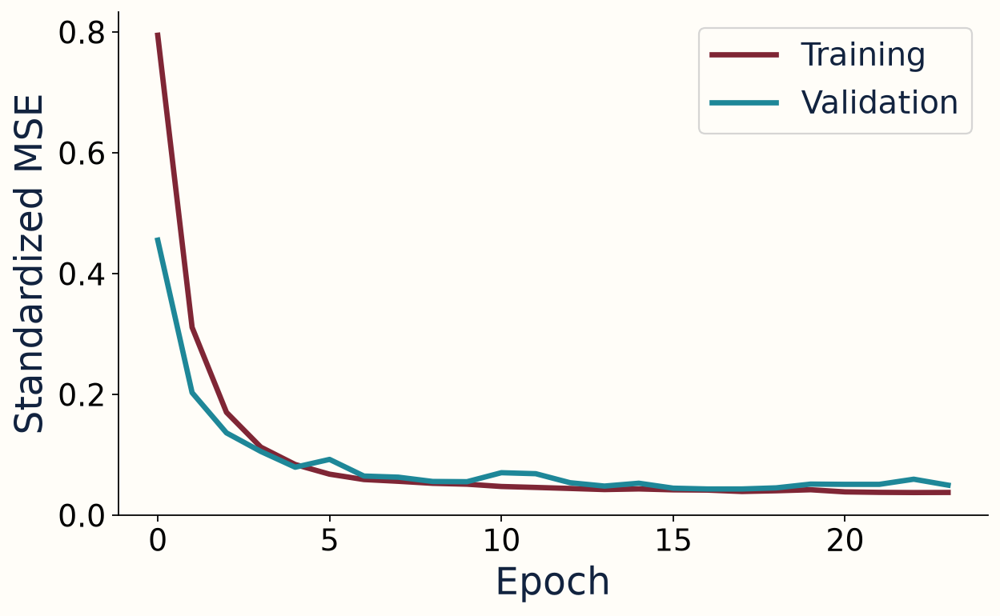
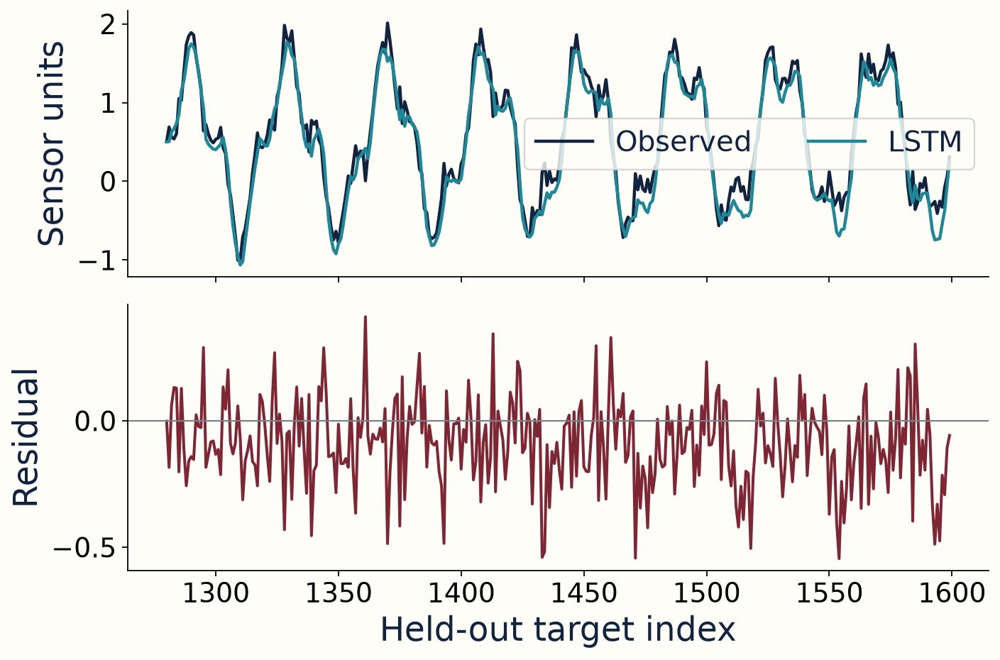
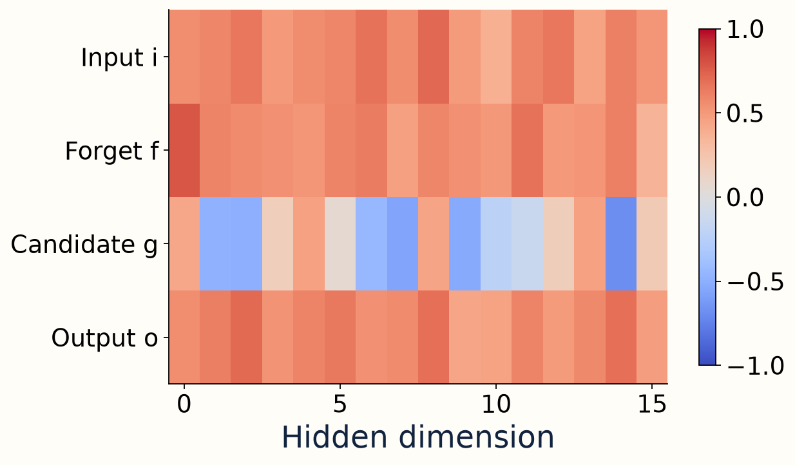

An observation becomes a sequence when its meaning depends on what came before it.
x₁, x₂, …, xₜ → predict xₜ₊₁

W07 · H1 · Sequential Data and LSTM
An observation becomes a sequence when its meaning depends on what came before it.
x₁, x₂, …, xₜ → predict xₜ₊₁
W07 · H1 · Sequential Data and LSTM
LSTM stores a running state. Attention retrieves relevant states. A Transformer builds representations with attention.
W07 · H1 · Sequential Data and LSTM
A sequence contains both values and an ordering rule.
[1, 2, 4, 8] ≠ [8, 1, 4, 2]
What remains identical after shuffling?
The multiset and mean; adjacency, trend, and time-dependent structure can change.
W07 · H1 · Sequential Data and LSTM
The prediction must use only information available at its origin.
history: x[t−L:t] target: x[t]
W07 · H1 · Sequential Data and LSTM
Sequence models receive a batch of histories, with features at every time step.
X ∈ ℝᴮˣᵀˣᶠ
W07 · H1 · Sequential Data and LSTM
Many-to-one predicts one value; many-to-many predicts a value at multiple positions.
W07 · H1 · Sequential Data and LSTM
Train on earlier targets, select on later validation, then evaluate on test.
train < validation < test
W07 · H1 · Sequential Data and LSTM
Global means and variances can reveal future distribution information.
z = (x − μtrain) / σtrain
W07 · H1 · Sequential Data and LSTM
Predict the next observation using the last known observation.
ŷ[t] = x[t−1]
W07 · H1 · Sequential Data and LSTM
An RNN applies the same state-update parameters at every time step.
hₜ = tanh(Wₓxₜ + Wₕhₜ₋₁ + b)
W07 · H1 · Sequential Data and LSTM
Backpropagation through time multiplies Jacobians along earlier states.
∂hₜ/∂hₜ₋ₖ = Jₜ Jₜ₋₁ … Jₜ₋ₖ₊₁
W07 · H1 · Sequential Data and LSTM
The cell state carries memory; the hidden state exposes a filtered view.
cell: cₜ hidden output: hₜ
W07 · H1 · Sequential Data and LSTM
Sigmoid outputs values between zero and one for each hidden dimension.
σ(z) = 1 / (1 + exp(−z))
W07 · H1 · Sequential Data and LSTM
Multiply the previous cell state by a learned forget coefficient.
fₜ = σ(Wf [hₜ₋₁; xₜ] + bf)
W07 · H1 · Sequential Data and LSTM
A candidate proposes content; the input gate scales how much is written.
iₜ = σ(Wi [hₜ₋₁; xₜ] + bi) gₜ = tanh(Wg [hₜ₋₁; xₜ] + bg)
W07 · H1 · Sequential Data and LSTM
Retain selected old memory and add selected new content.
cₜ = fₜ ⊙ cₜ₋₁ + iₜ ⊙ gₜ
W07 · H1 · Sequential Data and LSTM
The hidden state is a bounded, gated view of the updated cell.
oₜ = σ(Wo [hₜ₋₁; xₜ] + bo) hₜ = oₜ ⊙ tanh(cₜ)
W07 · H1 · Sequential Data and LSTM
Chosen gates make every intermediate step visible.
0.9 × 0.8 + 0.2 × (−0.5) = 0.62
What is the hidden output?
h = 0.7 × tanh(0.62) ≈ 0.386.
W07 · H1 · Sequential Data and LSTM
A high forget coefficient does not prevent new content from changing memory.
cnew = f × cold + i × g
W07 · H1 · Sequential Data and LSTM
Run setup and inspect the synthetic sensor before fitting anything.
W07 · H1 · Sequential Data and LSTM
A correct shape is insufficient if the window contains its target.
X[i] = signal[t−24:t] y[i] = signal[t]
W07 · H1 · Sequential Data and LSTM
Ridge uses fixed window positions; LSTM updates a shared recurrent state.
W07 · H1 · Sequential Data and LSTM
batch_first changes input/output layout, not hidden-state layout.
input: (B,T,1) states: (B,T,H) hₙ: (layers,B,H)
W07 · H1 · Sequential Data and LSTM
Gradient updates use training; checkpoint selection uses validation.
W07 · H1 · Sequential Data and LSTM
Inspect actual training and validation trajectories in your notebook.

W07 · H1 · Sequential Data and LSTM
MAE averages error magnitude; RMSE emphasizes large residuals.
MAE = mean |ŷ−y| RMSE = √mean(ŷ−y)²

W07 · H1 · Sequential Data and LSTM
PyTorch concatenates its learned gate parameters in i, f, g, o order.
linear projections → split → activations → cell update

W07 · H1 · Sequential Data and LSTM
Change window length while preserving the forecast question and split boundaries.
W07 · H1 · Sequential Data and LSTM
Retention depends on learned gates, sequence structure, and optimization.
direct memory factor ≈ ∏ fⱼ
W07 · H1 · Sequential Data and LSTM
A final-state encoder compresses many inputs into one fixed-width vector.
What should H2 let each output retrieve?
The relevant earlier representations, with weights depending on the current output query.